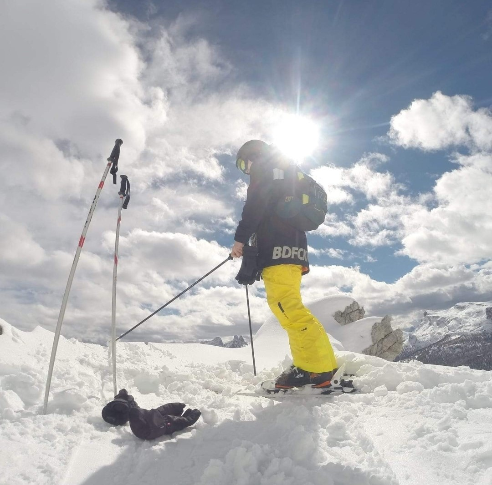
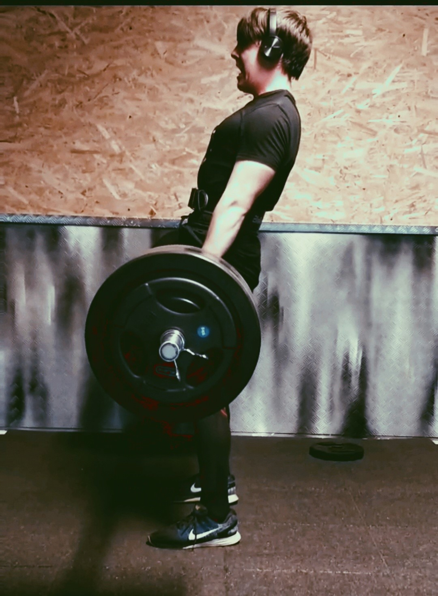
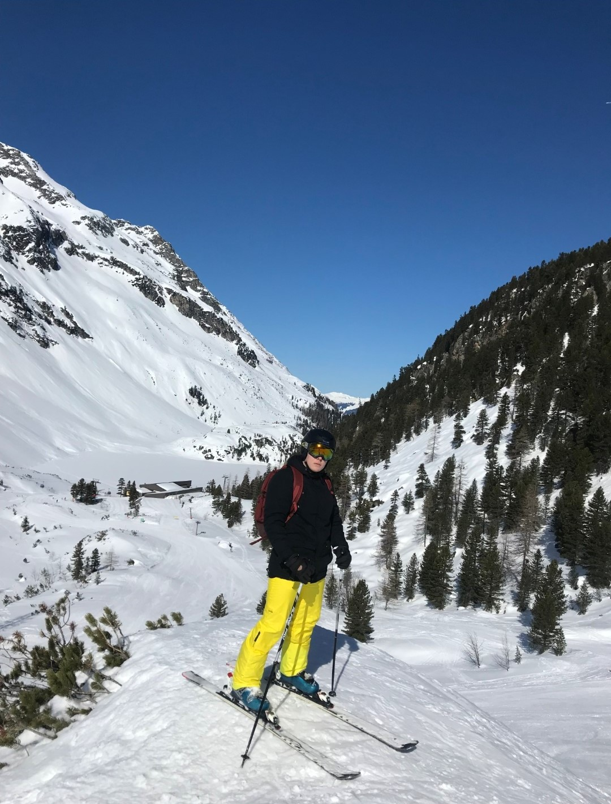

Mint korábban említettem legfőbb hobbim a sport azon belül az erő emelés amit három éve de csak hobbi szinten űzök. Eleinte csupán egy kis izom felszedése volt a célom, de végül nagy szerelem lett belőle. Az elmúlt három év alatt sikerült harminc kilót (nagyrészt izmot) felszednem.
Egyéni rekordjaim:
- Fekvenyomás: 120kg
- Guggolás: 130kg
- Felhúzás: 170kg
Az erőemelésen kívül nagy szerelmem még a síelés amit sajnos idén a pandémia miatt szintén ki kellett hagynom, de remélem hogy jövőre már újból lesz lehetőségem felcsatolni a léceket;


